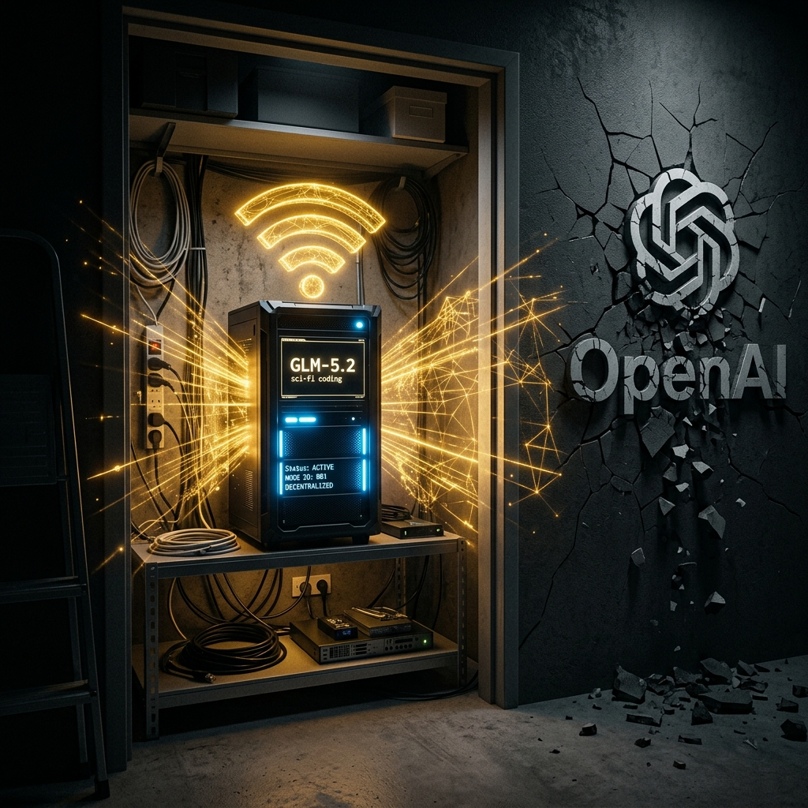

Geopolítica, Infraestrutura de Nuvem e Soberania Energética
Série: O Novo Tabuleiro do Mundo: IA, Baterias e a Batalha pela sua Conta de Luz
— Chamada e índice | 6 episódios + 1 epílogo | Lançamentos de maio a julho de 2027
Capa da série: as engrenagens invisíveis que ligam o processamento cognitivo global à fiação do seu quintal.
Nesta série, abrimos a caixa-preta do mercado de tecnologia e infraestrutura global. Discutimos como a Inteligência Artificial saiu das promessas mirabolantes do Vale do Silício para virar uma commodity física ávida por eletricidade. Analisamos a guerra silenciosa entre os modelos fechados americanos e a engenharia pragmática open-weights da China, o reposicionamento do Brasil como celeiro mundial de dados e a inevitável batalha tarifária na fiação das residências de quem vive no país. Ao final, mostramos como a resposta para a soberania individual está chegando através de kits fotovoltaicos e baterias de sódio de baixo custo vindos do Oriente.
Abaixo, você confere o índice completo de lançamentos e teasers de cada episódio para acompanhar esta jornada macroeconômica:

O fim do pedágio digital e o nascimento do provedor de processamento local.
Como a simbiose entre a fabricação barata da China e a resiliência do brasileiro encerra o maior embate de infraestrutura da década.
Lançamento: 12/07/2027
Nota do Autor: Esta série de publicações é um exercício de ficção analítica e design de futuros projetado para os próximos dez anos. Trata-se de uma projeção macroeconômica otimista sobre a autonomia energética e a resiliência do consumidor local frente aos embates de infraestrutura das Big Techs.